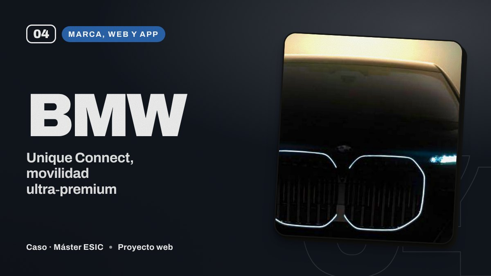

BMW Unique Connect: movilidad ultra‑premium.
Proyecto web para BMW: un servicio de movilidad para un cliente que no tiene tiempo que perder. Definimos a quién va dirigido, creamos la marca Unique Connect, diseñamos su web y su app, y montamos el cuadro de mando para medirlo.
- Contexto
- Proyecto web · Máster ESIC
- Mi papel
- Formé parte del equipo del proyecto (grupo 3)
- Entregables
- Buyer persona, moodboard, brandbook, web, app y KPIs
- Objetivo de la web
- Captar solicitudes de acceso cualificadas
La campaña, en la calle.
Así se verían las creatividades del equipo en la pantalla del propio coche: el servicio aparece donde está el cliente.

Alejandro no compra un coche. Compra tiempo.
Directivo con la agenda llena
Vive entre Madrid y Barcelona
de ingresos al año (más de 500.000 €)
Quiere que todo funcione sin tener que pensarlo
Una marca que no hace ruido.
«Crear una experiencia de movilidad ultra‑premium para un público exclusivo».Propósito de marca
Privacidad
Lujo silencioso
Control sin esfuerzo
Tecnología invisible
Anticipación, confianza, discreción y precisión. Un tono minimalista, elegante y directo: frases cortas, sin adjetivos de sobra.
Tipografía Inter, en regular y seminegrita. Logotipo Unique Connect en versión azul, negra y en positivo.
Una web con un solo trabajo: conseguir la solicitud correcta.
La web debe transmitir exclusividad, explicar la propuesta de valor y captar solicitudes de acceso cualificadas con un proceso simple y sin fricciones. Se apoya en tres pilares: precisión, privacidad y experiencia premium.
Arquitectura clara
Contenidos reducidos y claros, pensados para usuarios con poco tiempo.
Un único CTA
Una sola llamada a la acción, coherente en estilo visual y en propósito.
Estructura lineal
Los apartados siguen un orden narrativo, de la promesa a la solicitud.
Qué medimos para saber si funciona.
El objetivo de toda la web: solicitudes de acceso cualificadas.
minutos de permanencia media
clics en el CTA
de profundidad de scroll
de tasa de conversión
Valores de ejemplo del dashboard (abril) que propusimos en el proyecto, no datos reales de BMW.
La presentación.
Haz clic en una diapositiva para verla en grande · usa ← → para pasar